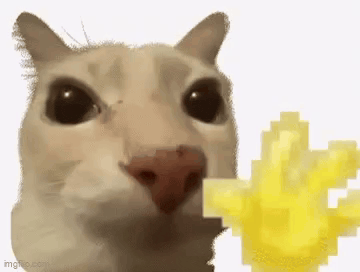
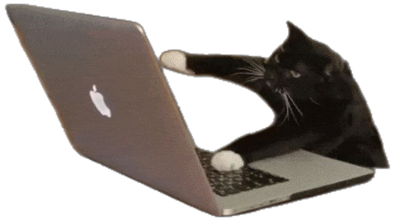

🌐 Language
English
한국어
SOUND ON
Cat Meme Generator

CLICK HERE TO ENTER
🔊 turn your sound on
NAH I'M OUT
yeah let's dig in

★ made by:
mjlee0914 (GitHub)
★
WHERE DO YOU THINK YOU'RE GOING?
ok ok i'll stay 😿
thx 4 ur attention
MOOD CAT
How do you feel?
MEOW!
SUBMIT